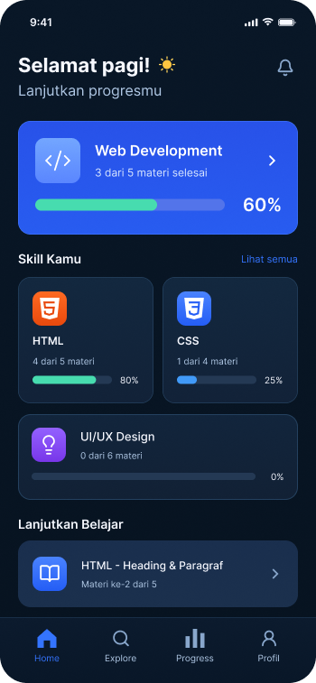
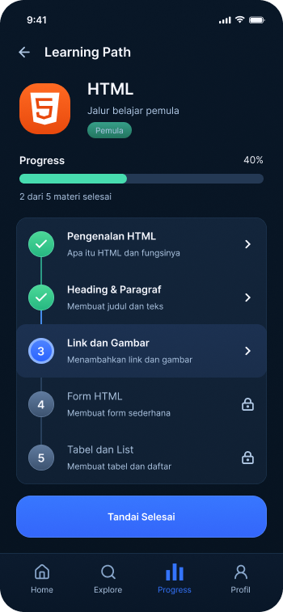
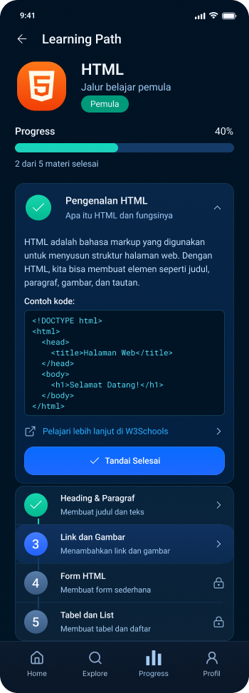
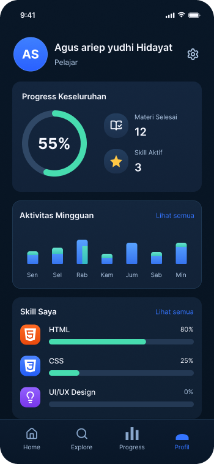

Explore Skills
Discover different skills and find new learning opportunities that match your interests.
SkillTrack is a simple and focused app to help you learn new skills, follow structured learning paths, and track your personal growth.
Free to download · Android APK
FEATURES
Discover the tools that help you learn new skills, stay organized, and track your progress along the way.
Discover different skills and find new learning opportunities that match your interests.
Follow structured learning paths that guide you through each step of your learning journey.
Monitor your learning progress and see how far you have come as you complete learning activities.
Keep your learning identity organized and access your personal information in one place.
ABOUT SKILLTRACK
SkillTrack is designed to make personal learning more organized and meaningful. It helps you explore new skills, follow structured learning paths, and keep track of your learning journey in one place.
Explore FeaturesDiscover new skills and learning opportunities.
Build knowledge through structured learning.
Monitor your learning journey and progress.
APP PREVIEW
Experience a clean and intuitive interface designed to make your learning journey better.




See how SkillTrack looks in real life.
Perfect on any device.
Monitor your learning journey.
Turn your goals into skills.
HOW IT WORKS
Get started with SkillTrack in just a few easy steps and begin your journey to become a better you.
Temukan bidang yang ingin kamu pelajari, seperti HTML, CSS, dan UI/UX Design.
Pelajari materi secara bertahap mengikuti learning path yang tersedia.
Tandai materi yang selesai dan pantau perkembangan kemampuanmu.
FAQ
Everything you need to know about SkillTrack.
SkillTrack is a learning application designed to help users explore new skills, follow structured learning paths, and track their learning progress in one place.
Yes! SkillTrack is free to download and use.
You can explore various learning topics, including HTML, CSS, and UI/UX Design.
Learning Path organizes learning materials into structured steps, allowing you to learn topics gradually and track completed materials.
Yes! SkillTrack provides progress indicators to help you monitor completed materials and your learning journey.
Yes, SkillTrack is currently available as an Android application.